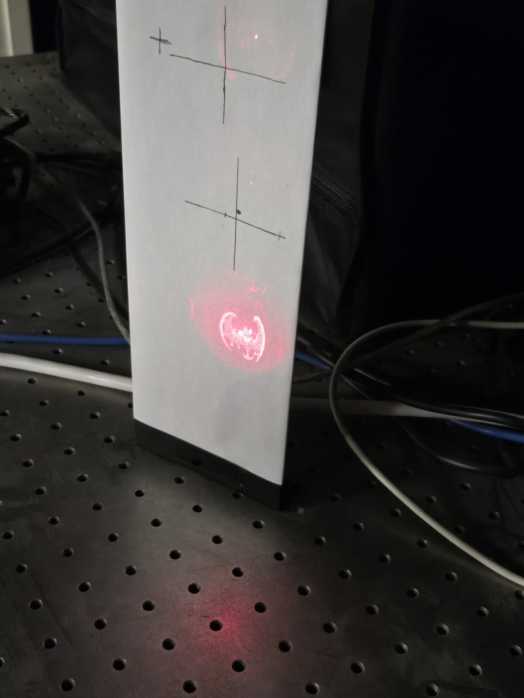
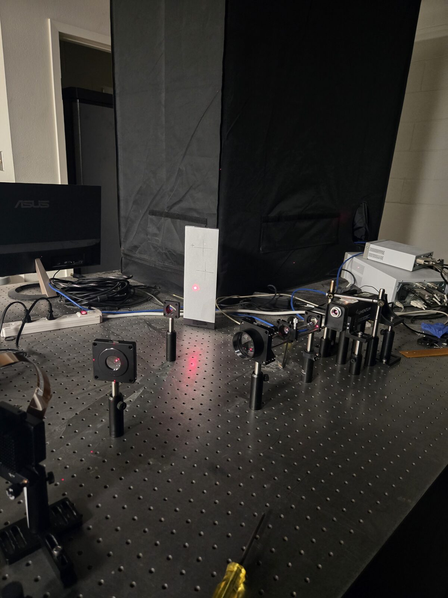
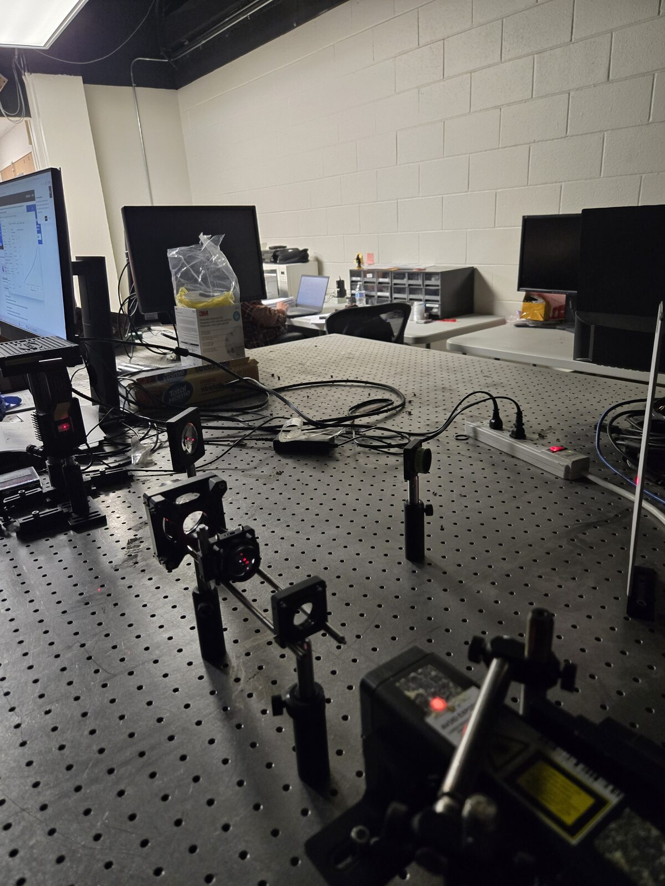

2026 · RESEARCH · OPTICS · HOLOGRAPHY · IN PROGRESS
Holographic Vision
Creating holograms using optics fundamentals, a 633 nm laser, and a spatial light modulator (SLM), as a step toward 3D holographic imaging.

Overview
This project uses optics fundamentals and a laser to create holograms. We are working with a 633 nm laser and using the SLM software to shape the beam into holographic images. The long-term goal is to help create 3D holograms. One application this work can support is helping doctors visualize small, minute faults or details during surgery or when making artificial human parts.
Optical Setup
The beam path runs from a diode laser through a 25 mm lens, then a 100 mm lens, then reflects off the SLM, and then passes through a 75 mm lens and a 200 mm lens before reaching the viewing screen.


Results
So far, we have been able to create 2D holograms of different images using this setup.
Progress
This project is in progress. The next step is to move from 2D holograms toward 3D holographic images.